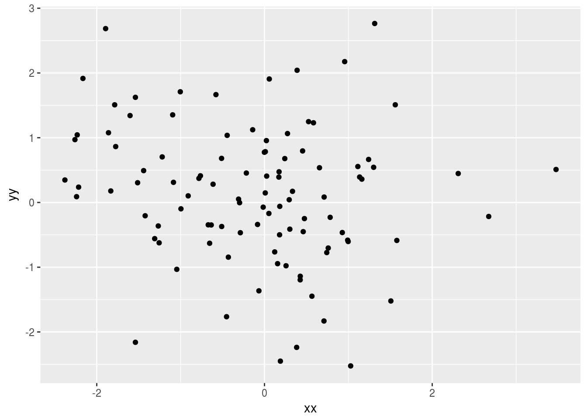

Tufte-esque
Playing with a new look, thanks to this.
One of the main reasons I’m trying this is the possibility of making side comments on the side (look right).
Ho ho ho.
This is a new thought apparently.
The banner on the front page and the logo at the top of each page (on which you click to get back to the front page) are Evidently. trains, specifically British Class 156 diesel multiple-unit trains, from which I have seen a lot of Britain.
Let me just generate a random pointless scatterplot: First generating some pointless data, and before that waiting through the tidyverse’s startup messages.
library(tidyverse)## Loading tidyverse: ggplot2
## Loading tidyverse: tibble
## Loading tidyverse: tidyr
## Loading tidyverse: readr
## Loading tidyverse: purrr
## Loading tidyverse: dplyr## Conflicts with tidy packages ----------------------------------------------## filter(): dplyr, stats
## lag(): dplyr, statsd=tibble(xx=rnorm(100),yy=rnorm(100))
d## # A tibble: 100 x 2
## xx yy
## <dbl> <dbl>
## 1 1.8849194 0.8231682
## 2 -1.0401519 -0.5459571
## 3 0.9888525 0.1543074
## 4 -0.3748076 -0.7994106
## 5 -0.6710345 0.7407841
## 6 -0.1273932 1.8880684
## 7 -0.5542958 -0.1663893
## 8 0.9231793 -1.2946249
## 9 -1.1749279 -0.9040896
## 10 -0.6210940 -1.6849725
## # ... with 90 more rowsg=ggplot(d,aes(x=xx,y=yy))+geom_point()
g
That’s a pretty pointless scatterplot.